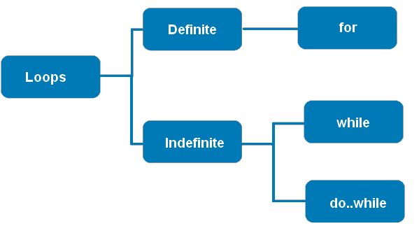
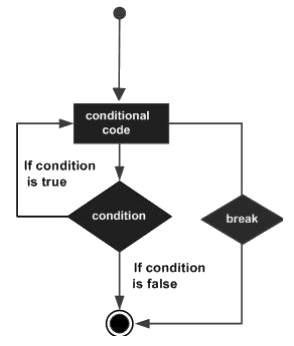
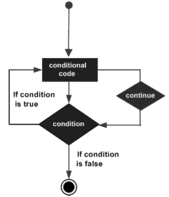

TypeScript - Loops
You may encounter situations, when a block of code needs to be executed several number of times. In general, statements are executed sequentially: The first statement in a function is executed first, followed by the second, and so on.
Programming languages provide various control structures that allow for more complicated execution paths.
A loop statement allows us to execute a statement or group of statements multiple times. Given below is the general form of a loop statement in most of the programming languages.
TypeScript provides different types of loops to handle looping requirements. The following figure illustrates the classification of loops:

- Definite Loop
- A loop whose number of iterations are definite/fixed is termed as a definite loop. The for loop is an implementation of a definite loop.
- Indefinite Loop
- An indefinite loop is used when the number of iterations in a loop is indeterminate or unknown.
Statements
| Statment | Description | Flow diagram |
|---|---|---|
| break | The break statement is used to take the control out of a construct. Using break in a loop causes the program to exit the loop. |  |
| continue | The continue statement skips the subsequent statements in the current iteration and takes the control back to the beginning of the loop. Unlike the break statement, the continue doesn’t exit the loop. It terminates the current iteration and starts the subsequent iteration. |  |